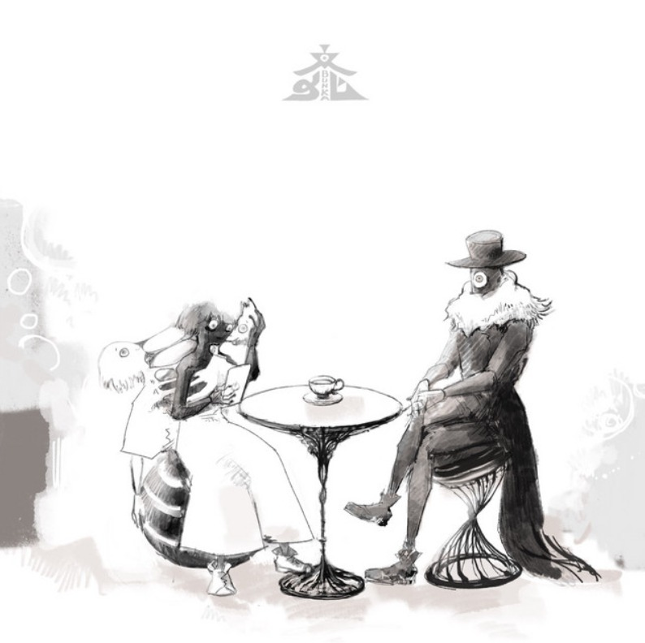

Dramatugy

An original song by Eve, sung by Hatsune Miku, animated by Mah. His self-cover uses the same animated footage and was released on October 11, 2017. Eve included his self-cover MV on his own self-made record label harapeco records CD+DVD release on December 13, 2017 as a part of his “Bunka” album.
Underdog
Underdog is Eve's 31st digital single which premiered on November 28th, 2025. The music video features OFF SCRIPT's characters, primarily Aira, and the animation is done by OFF SCRIPT. The Song's "Live Version" released on December 27th, 2025 and its "Short Version" released on December 21st, 2025.
Ghost Avenue

Ghost Avenue (ゴーストアベニュー, Gōsutoabenyū) is eve's 29th digital single. It was released on 11th July 2025.